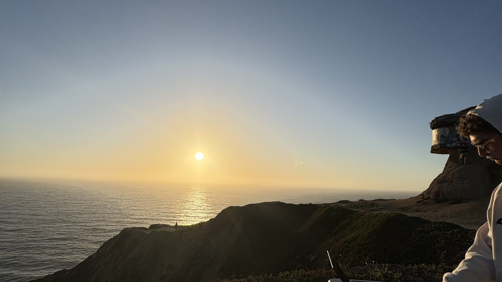

July 16, 2026 · Ocean overlook
Sunset Session
PlayingFalling Back — Obskür
NextBreather — Chris Stussy
⌖ Devil's Slide15 tracks29:38
Native on macOS + iPhone
Set Player is the memory layer for every DJ set—bringing the recording, tracklist, waveform, photos, and place back together.
Version 1.0 · Free download · Native SwiftUI
The whole set, not just the file
A set is more than an MP3.
It is the track you nearly forgot. The place the sun went down. The transition that finally landed. Set Player keeps the full memory.
Your set, reconstructed
Everything around a performance stays attached to the performance—not scattered across folders, apps, and camera rolls.

July 16, 2026 · Ocean overlook
Rekordbox, aligned
Match a recording against Rekordbox history to create a timed setlist with track order, start position, and length.
Capture + control
Capture a new set directly on macOS, then inspect and control per-application volume without leaving the library.
Performance extensions
Open Live Lyrics synced to the current Rekordbox track—or switch to Rave Lyrics for beat- and phrase-reactive visuals.
One continuous workflow
Search and curate the full library on desktop, then keep the same set memories close with the native iPhone companion.
Built-in extensions
Beat and phrase visuals
Synced to Rekordbox
Sets, tracks, and stats
Capture application audio
Control application levels
Library continuity
Set Player 1.0
Turn every recording into a place you can revisit.
Ad-hoc signed preview · iPhone target available from source